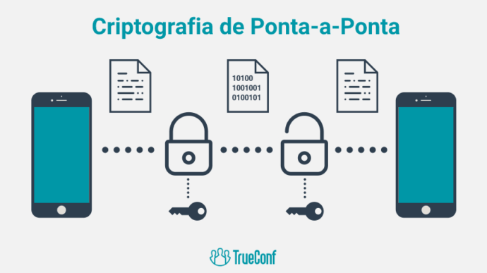

Criptografia: conceitos básicos e aplicação prática
Origem
Como funciona
Categoria
Aplicação
Importância
Qual é origem da criptografia?
É comum vincular a palavra “criptografia” à tecnologia, sistemas bancários e de segurança, bem como à matemática avançada e algoritmos. No entanto, a origem da criptografia é milenar. A prática de codificar informações para mantê-las em segurança é, na verdade, feita desde a Antiguidade. Estima-se que essa estratégia surgiu há cerca de 1.900 anos antes de Cristo, no Egito. Você já percebeu que a humanidade, mesmo dotada de várias tecnologias, não conseguiu decodificar vários documentos e artefatos históricos do nosso passado? Já um exemplo da origem da criptografia que foi desvendada é a famosa Pedra de Roseta. Encontrada no Egito em 1799, por tropas francesas comandadas por Napoleão Bonaparte, o pedaço de granito é coberto pelo mesmo texto, mas em 3 diferentes grafias/idiomas. Eram eles: hieróglifos egípcios, grego antigo e demótico. A presença das 3 grafias ajudou os estudiosos a traduzirem o texto em sua totalidade. Posteriormente, isso ampliou a compreensão sobre outros documentos e artefatos egípcios, já que proporcionou entendimento sobre a língua egípcia grifada em hieróglifos.
O que é e como funciona?

A criptografia é um conjunto de técnicas pensadas para proteger uma informação de modo que apenas o emissor e receptor consigam compreendê-la. É utilizada em comunicações digitais, como na troca de mensagens ou em pagamentos online. Em geral são usados algoritmos para realizar o codificação e para decodificação é necessário ter acesso à chave utilizada no primeiro processo. O princípio básico da criptografia é o seguinte: permitir que duas pessoas compartilhem secretamente mensagens entre si, sem que elas sejam acessadas por terceiros. Normalmente, sistemas criptográficos usam texto cifrado (ciphertext) para disfarçar texto simples (plaintext), com base em uma chave.
Qual é o tipo de criptografia?
A confidencialidade de dados é o maior princípio da criptografia: e a forma de conquistá-la é com a encriptação de informações. Esse processo, muitas vezes confundido com a criptografia, não é um sinônimo para a mesma. A encriptação é parte da criptografia: trata-se especificamente do embaralhamento de informações para que elas sejam ilegíveis para qualquer um que não possua a chave correta. Nesse sentido, quando falamos de criptografia, normalmente nos referimos a dois tipos: simétrico e assimétrico. Que tal conhecê-los?
Criptografia simétrica
A criptografia simétrica é o tipo mais tradicional e provavelmente o sistema que as pessoas estão mais familiarizadas. Nele, a criptografia é realizada com base em uma única chave — que é utilizada para criptografar e também descriptografar uma mensagem. O exemplo da imagem que postamos anteriormente ilustra bem a criptografia simétrica: A chave é 3 e a mensagem original, “HELLO“, foi criptografada como “KHOOR“. Ou seja, para descriptografar, basta aplicar a mesma chave/lógica, que é a troca de cada letra para a terceira letra posterior a ela no alfabeto. Sua principal aplicação é na proteção de dados em repouso, como em bancos de dados ou discos rígidos — isso porque é necessário contar com um canal seguro para transmitir a mensagem. Entre seus principais benefícios, a criptografia se destaca por ser mais rápida e por ser ideal para proteger dados que vão ficar em único local. Porém, como desvantagem, destaca-se a dificuldade de distribuição segura de chaves. A lógica é: se há um canal seguro para passar as chaves, porque não passar a mensagem de uma vez? Assim, qualquer pessoa que interceptar e ler a chave, poderá tranquilamente descriptografar a mensagem.
Qual é a aplicação da criptografia?
A criptografia pode ser utilizada em aplicações e ambientes cuja segurança das informações é algo relevante para o projeto, principalmente em sistemas WEB, onde o dado trafega em um meio público correndo um risco maior de ser interceptado, fato este que pode gerar prejuízos enormes para uma organização.
Qual é a importância da criptografia?
A grande necessidade de uso da criptografia está na proteção da identidade e dos dados do usuário. Caso haja alguma tentativa de invasão, o sistema de criptografia protege todas as informações importantes: tanto os dados pessoais dos usuários o quanto o conteúdo de arquivos e de mensagens trocadas.
Desenvolvedores:
Gustavo de Souza
Miguel Rogério
Please ensure Javascript is enabled for purposes of
website accessibility